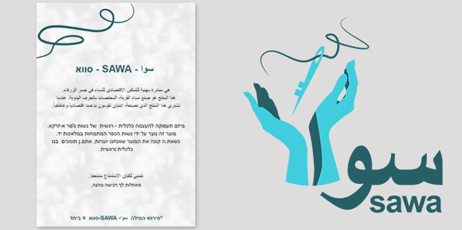
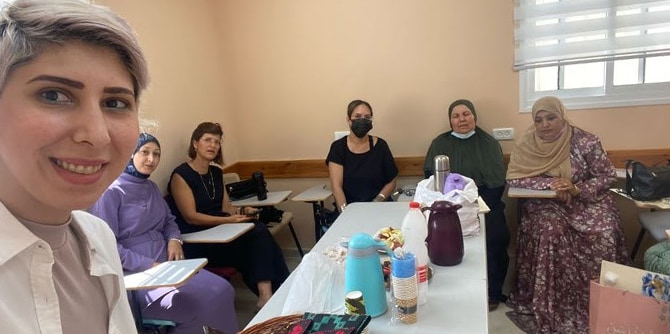

צילום: מיכל שדה-גלדווסר וסיליה ג'ובארי
צילום: מיכל שדה-גלדווסר וסיליה ג'ובארי
הכפר ג'סר א-זרקא שבצפון הארץ, (ליד זכרון יעקב), מדורג במיקום נמוך במדד הסוציו-אקונומי וסובל שנים רבות ממיעוט אפשרויות להתפתחות. עם זאת, בשנים האחרונות החלו להתחולל תהליכי שינוי על-ידי תושבי המקום, ופרויקטים ומיזמים מקומיים מתפתחים במגוון של תחומים. אחד מהתחומים הללו הוא תחום התיירות: פרויקטים תיירותיים כגון הג'וחה גסטהאוס – פרי יוזמתם המשותפת של תושבי הכפר אחמד והיפה ג'ורבאן ונטע חנין; ו-Beachub – מרחב עבודה על חוף הים, אירוח ביתי המלווה בסדנה, בארוחה וסיפור אישי ועוד.
פרויקט סווא (SAWA) הוקם בג'סר א-זרקא על-ידי
מיכל שדה-גלדווסר וסיליה ג'ובארי. מיכל היא עובדת סוציאלית ועובדת כיום כמנהלת תחום אימפקט במפרש – מרחב ליזמות בחינוך, ולצד זה עוסקת גם ביזמות חברתית והכשרות תעסוקתיות לנשים בג'סר א זרקא, וסיליה ג'ובארי היא יועצת חינוכית ומנהלת יחידת "מען" לסטודנטים מהחברה הערבית במכללת שנקר. מיכל וסיליה הן בוגרות מחזור ד' של תוכנית מנדל למנהיגות אזורית בצפון – אחת מתוכניות מרכז מנדל למנהיגות בצפון. הפרויקט שלהן הוא דוגמה לפעילות של בוגרי המרכז לשם סיוע לתהליכים החברתיים המתעוררים בחברה הערבית בישראל ולחיזוקם – במסגרת התמקדותו של מרכז מנדל למנהיגות בצפון בחינוך למנהיגות בחברה המגוונת המאפיינת את אזור הצפון.
צילום: מיכל שדה-גלדווסר וסיליה ג'ובארי
העמיתים והעמיתות הנבחרים מדי שנה לשלוש התוכניות השונות של מרכז מנדל למנהיגות בצפון הם פעילים חברתיים ובעלי תפקידים בכירים במגזר הציבורי, בשלטון המקומי והמגזר השלישי – רובם ככולם מאזור הצפון. המרכז שואף שהרכב המשתתפים בתוכניות ישקף נאמנה את הרכבה המגוון של האוכלוסייה בצפון. מתוך התפיסה שמנהיגות מתפתחת ונבחנת במעורבות פעילה באתגרי השטח, מרכז מנדל למנהיגות בצפון רואה בבוגרים ובפעילותם חלק ממרחב פעולה של עשייה לשינוי חברתי בצפון – מרחב אשר נמצא בתהליכי בנייה מתמדת.
סיליה ומיכל זיהו את הרצון הקיים ואת הכוחות הפנימיים באוכלוסיית הכפר – כוחות המאפשרים הנעת מהלכים מקומיים במטרה לחזק את הקהילה ולעודד את המנהיגות בה. הן יזמו, יחד עם נשות הכפר, סדנת עיצוב תיקי בד למחשבים ניידים, ולשם כך גייסו את מכללת שנקר – אחת המכללות המובילות בישראל לעיצוב ולאמנות. מעבר ללמידת המלאכה ולעבודת היצירה, המיזם גם מנהל שיתופי פעולה עם פרויקטים תיירותיים אחרים בכפר – התיקים נמכרים ב-Beachub כמוצר משלים למחשבים הניידים.
 צילום: מיכל שדה-גלדווסר וסיליה ג'ובארי
צילום: מיכל שדה-גלדווסר וסיליה ג'ובארי
סיליה מאמינה שהחשיפה לעיצוב באמצעות כלי שונים, כגון יצירת לוח השראה והבאת הרעיונות הפנימיים למרחב העבודה, תורמת לפיתוח החשיבה היצירתית והפרקטית. מיכל בוחרת להתייחס לפרויקט דרך הממד הרגשי, אשר נוכח מאוד במפגשים. לדבריה, יש חשיבות רבה בביסוס מבנה קבע שבו נשים נפגשות זו עם זו במקום שווה, משותף ומעצים. החזון של שתיהן הוא הקמת מרכז קבע, פיזי ואנושי, שיציע מגוון רחב של אפשרויות ויאפשר לכל אישה לקחת ממנו מה שהיא יכולה וכמה שהיא רוצה – מתוך ידיעה שהמרכז זמין עבורן בכל עת.
בשדה פעולה שבו נמצאים שחקנים רבים, מיזמים מסוג זה נפתחים ונסגרים בכל רחבי הארץ בלי להותיר אימפקט משמעותי. "מהבחינה הזאת", אומרת סיליה, "תוכנית מנדל מיקדה אותי מאוד. בדרך כלל אני עובדת בצורה רוחבית, במקום להתמקד בדבר אחד ועד הסוף, כמו שדפי [מנהלת התוכנית] אומרת תמיד". שתיהן מגיעות עם רקע ביזמות חברתית, אך לדבריהן התוכנית העניקה להן תחושת ביטחון ומסוגלות. עם זאת, ללא התעוררות כוחות פנימיים מן השטח, לא היה אפשר לפעול כלל. מהבחינה הזאת, בוגרי מרכז מנדל למנהיגות בצפון הם חלק מתהליך אימפקט כוללני המאפשר להם ליישם את פרקטיקות המנהיגות במטרה להיות חלק מתהליכים פנימיים אשר התעוררו בשטח, ולקדמם.
צילום: מיכל שדה-גלדווסר וסיליה ג'ובארי
נוסף על כך, המפגש בין העמיתים והקשר ההדוק בין עמיתי מחזור זה ובין בוגרי התוכנית האזורית בכלל, מסייעים לקדם תהליכים בשטח. "כך אפשר להזיז דברים במציאות, בזכות מגוון האנשים שמגיעים לתוכניות השונות", הן אומרות.
כיום מיכל וסיליה מתמקדות ביצירת שיתופי פעולה עם גורמים שונים, בעיקר מהאקדמיה, וכן במציאת בית קבע להמשך הפעילות והרחבתה.
{kind=link}
{kind=link}